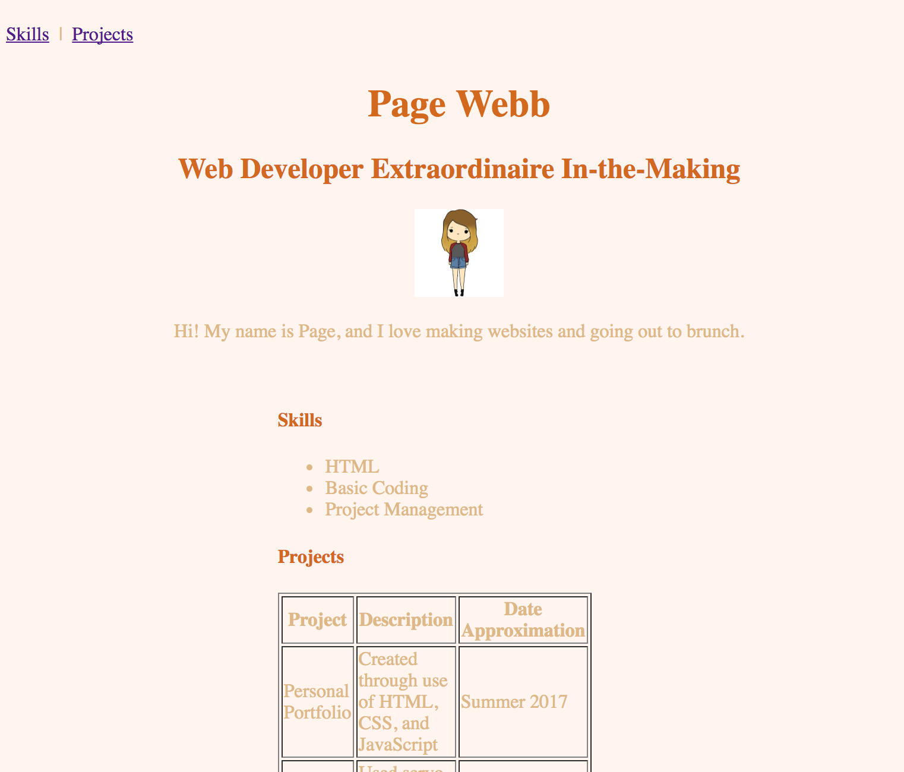

[Home](index.html)
## Structure, Style, Starter Code: Part Five
[<< Previous Lesson](lesson-htmlcss-2b.html)&nbsp;&nbsp;|&nbsp;&nbsp;[Next Lesson >>](lesson-htmlcss-2d.html)
### CSS: Clearly Stylish? Surely.
#### Padding and Borders and Margins, Oh My!
Here is where CSS gets fun, or tricky, depending on who you ask. As you advance with your knowledge of web development, you can use frameworks like Bootstrap that automatically set positioning and spacing for you, since one can spend hours trying to align all the different sized and shaped elements in perfect harmony.
Let's start with the basics - everything in CSS **spacing** revolves around the **box model**, shown below.
<img src="images/margin-order.jpg" alt="Margin Order" style="height: 50%; width: 50%">
<br><span style="color:grey">Source: [monc.se](http://monc.se/kitchen/38/cascading-order-and-inheritance-in-css)</span>
Your content, a box, is inherently enveloped in three other boxes:
* the [**padding**](https://www.w3schools.com/css/css_padding.asp) box, which is transparent and denotes the area around the content, resides inside
* the [**border**](https://www.w3schools.com/css/css_border.asp) box, which is opaque when defined, resides inside
* the [**margin**](https://www.w3schools.com/css/css_margin.asp) box, the transparent area that denotes the outside of the border
<span style="color:blue">Quick Tip: </span>Each of these attributes can be altered for *any one side of the box*, margin-left or padding-top, for example.
```
div {
background-color: lightgrey;
width: 300px;
border: 25px solid green;
padding: 25px;
margin: 25px;
}```
Note that in the example above, the metric "px" on each line denotes *pixels*, the unit of measurement used to denote the width of each section. The word "solid" under the border attribute defines *border-style*, which can be *solid*, *dotted*, *dashed*, or *double*, among other things. Test out the usage of each of these items [here](https://www.w3schools.com/css/tryit.asp?filename=trycss_boxmodel).
___
Knowledge of the box model and how to use spacing to your advantage lets you **change the positioning** of your elements for the first time in this course. Want to move something a little further to the right? Just set your *margin-left* and/or *padding-left* to a higher pixel count. Centering elements requires an equal pixel count of both on left and right sides.
Diving a little further into *positioning* in CSS, let's introduce the **position** property, the specifier of an element's type of positioning method.
There exist five different position values:
<img src="images/css-positioning.jpg" alt="CSS positioning" style="height: 100%; width: 100%">
<br><span style="color:grey">Source: [GitHub: euniceschoi](https://github.com/euniceschoi/euniceschoi/blob/master/blog/css-concepts.html)</span>
1. [**static**](https://www.w3schools.com/css/tryit.asp?filename=trycss_position_static), the HTML default property, is not affected by top, bottom, left, and right properties
2. [**relative**](https://www.w3schools.com/css/tryit.asp?filename=trycss_position_relative), which positions an element relative to its normal position and is affected by changing the TBLR properties. Other content will *not* change to fit the spaces left by a relatively positioned element.
3. [**fixed**](https://www.w3schools.com/css/tryit.asp?filename=trycss_position_fixed) ensures that the element will always stay in the same place, even when the page is scrolled. A fixed element does not leave a gap in the page where it would've conventionally be located (it overlaps with other elements) and is affected by the TBLR properties.
4. [**absolute**](https://www.w3schools.com/css/tryit.asp?filename=trycss_position_absolute) positioning positions the element relative to the elements nearest positioned ancestor instead of relative to the viewport, like a *fixed* element may be. Use of this positioning tag is advised against.
5. [**sticky**](https://www.w3schools.com/css/tryit.asp?filename=trycss_position_sticky) positioning, often popular for menu bars in many contemporary websites, toggles between keeping its element *relative* and *fixed* based on the user's scroll position. You must specify at least one of the TBLR properties in order for sticky positioning to work.
<span style="color:blue">Quick Tip: </span> The **z-index** property of an element, an outlier to the main five position values, allows you to create overlapping elements and prioritize which ones come out on top. A z-index of **-1** will move that element to the back if no smaller z-index elements exist, whereas a z-index of **1** will move the associated element forward (relative to other elements with smaller z-index values).
<span style="color:blue">Quick Tip: </span> Did you know that a number of websites abide by an "F-layout" principle, where all their content falls in such a way that users can grasp most of the information they need at first glance by scanning the page in an "F" formation? Eyetracking studies show that users tend to linger on the left side of the screen, making this the optimal place to put the important elements of your site. Read more about it [here](https://webdesign.tutsplus.com/articles/understanding-the-f-layout-in-web-design--webdesign-687).
<img src="images/f-layout-2.jpg" alt="F-layout" style="height: 50%; width: 50%">
<br><span style="color:grey">Source: [Tutorials Plus: Web Design](https://webdesign.tutsplus.com/articles/understanding-the-f-layout-in-web-design--webdesign-687)</span>
<br>
#### <span style="color:red">Challenge #2: So What's Your Position on That?</span> <br>
The time has come to shake up the content of your page from its boring word document standard left align. For starters, lets move all our key information (name, title, picture, introductory paragraph) to the center of the page. Let's surround all of these attributes in a **div** tag and add a **main** class attribute to it.
```
<div class="main">
<h1>Page Webb</h1>
<h2> Web Developer Extraordinaire In-the-Making</h2>
<img src="images/page.jpg" alt="Page" style="width: 10%; height: 10%">
<p>Hi! My name is Page, and I love making websites and going out to brunch.</p>
</div>```
Now we can whip up some of the positional CSS for these.
```
.main{
margin: auto; /* Sets the margins to equal on both sides */
text-align: center; /* Keeps the text centered, not left aligned at the center of the page */
padding: ___ px; /* Ensures that longer lines of text don't stretch out to borders */
}```
Try doing something similar for the "Skills" and "Projects" sections as well, by surrounding both categories in a **.sections** tag.
```
.sections{
margin: ___;
width: ___; /* Centering will not be effective if this is set to 100%, or not set at all */
padding: ___;
}
```
You can also try applying this same styling to your menu bar if you wish.
Try expanding and compressing your browser window a few times as well and notice how everything stays centered without having overlapping or cut off elements. This feature is called **responsiveness**, meaning that your site can be viewed on any device or differently-sized browser window without breaking. Good web development practice dictates that your site should always be responsive, so be sure to check this from time to time.
At the conclusion of this exercise, your site, if centered, should look something like this.

<span style="color:red">Bonus Challenge 2A: </span> Add CSS code that would make your "Skills" and "Projects" sections side-by-side, rather than stacked. Add borders around both.
<span style="color:red">Bonus Challenge 2B: </span> You may have noticed the shrinking of your picture in the process of this exercise. How would you go about fixing this?
[<< Previous Lesson](lesson-htmlcss-2b.html)&nbsp;&nbsp;|&nbsp;&nbsp;[Next Lesson >>](lesson-htmlcss-2d.html)